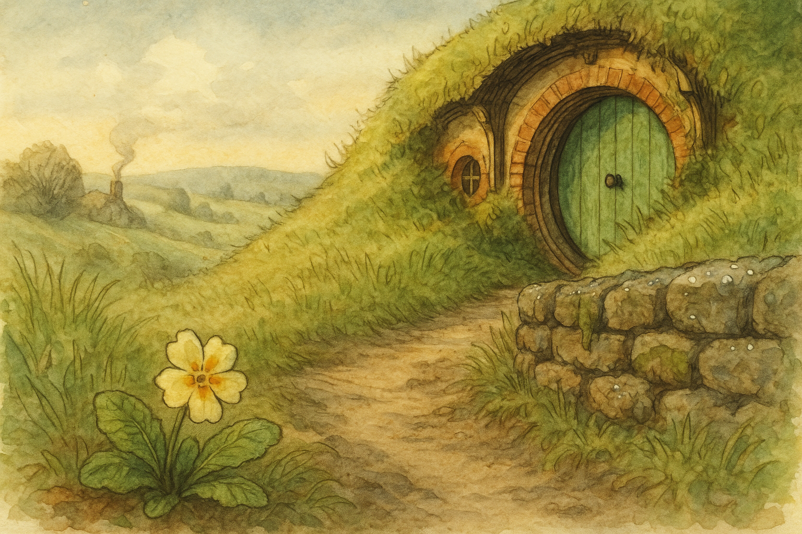

This morning the Shire looked as if it had been washed and set out to dry: dew on the stones, clean air, and that sort of light that makes even a sleepy hobbit feel respectable. On the Hill path I noticed a primrose — only one — shining like a little coin someone had forgotten.
I have always been fond of such modest announcements. A trumpet-blast is all very well for dwarves, but for the rest of us a single flower can do the same work: it tells you the season is turning whether you are ready or not. In Middle Earth, the greatest changes often begin the same way — quietly, in a corner, while the kettle is still thinking about boiling.
I stood there long enough to feel the day settle into place, and I remembered a line from my own book: "So comes snow after fire, and even dragons have their ending." It is a grand sentence, but it belongs to small mornings too. One primrose does not make a spring, of course — yet it does make a promise that winter is not the only story the year knows how to tell.
Filed under: Middle Earth • Written at Bag End